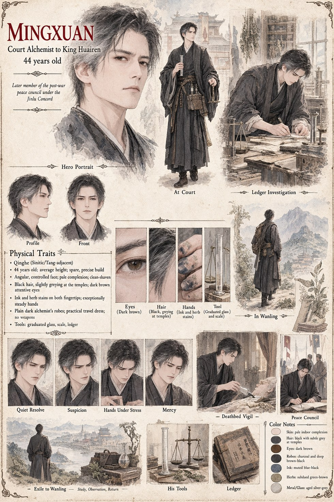

Mingxuan
Court Alchemist to King Huairen · 44 years old · later of the peace council under the Jinlu Concord
Court Alchemist to King Huairen, and the one man in Jinlu who treats a servant's fright as a question rather than an inconvenience. When Suyin is brought to him shaking and unable to say why, he listens to her account of an overheard truth she cannot possibly have overheard, and instead of dismissing it, measures out one of the four remaining sips himself — not to help her, he tells himself, but to know precisely what he is dealing with. It works exactly as she described: fifteen minutes of a nearby animal's own perception, then nothing, no residue, no memory of having granted it at all.
He carries that same discipline — verify, then act — through everything that follows, including the slow poisoning he eventually traces through Xiaobao's own fear of a steward's step, and gives the King the last sip in his own hand rather than anyone else's, on the night Huairen dies. Chancellor Jian recasts the whole investigation as Mingxuan's own coup dressed as medicine, and Duan gets him out of Jinlu ahead of the arrest that never quite catches him. He signs the Jinlu Concord as a member of the peace council twenty-six years later, and near the very end of his life answers a village scribe's apprentice's one honest question about a bottle that could speak to birds — then lets the boy write down neither the question nor his answer.
“A man who does not keep his own accounts has no business auditing a kingdom's.”